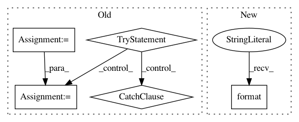

981e4266d4ea816b08a762193bd52f40cd1a3242,examples/mnist/keras/mnist_inference.py,,inference,#,26
Before Change
util.single_node_env()
// load saved_model using default tag and signature
sess = tf.Session()
tf.saved_model.loader.load(sess, ["serve"], args.export)
// parse function for TFRecords
def parse_tfr(example_proto):
feature_def = {"label": tf.FixedLenFeature(10, tf.int64),
"image": tf.FixedLenFeature(IMAGE_PIXELS * IMAGE_PIXELS, tf.int64)}
features = tf.parse_single_example(example_proto, feature_def)
norm = tf.constant(255, dtype=tf.float32, shape=(784,))
image = tf.div(tf.to_float(features["image"]), norm)
label = tf.to_float(features["label"])
return (image, label)
// define a new tf.data.Dataset (for inferencing)
ds = tf.data.Dataset.list_files("{}/part-*".format(args.images_labels))
ds = ds.shard(num_workers, worker_num)
ds = ds.interleave(tf.data.TFRecordDataset, cycle_length=1)
ds = ds.map(parse_tfr).batch(10)
iterator = ds.make_one_shot_iterator()
image_label = iterator.get_next(name="inf_image")
// create an output file per spark worker for the predictions
tf.gfile.MakeDirs(args.output)
output_file = tf.gfile.GFile("{}/part-{:05d}".format(args.output, worker_num), mode="w")
while True:
try:
// get images and labels from tf.data.Dataset
img, lbl = sess.run(["inf_image:0", "inf_image:1"])
// inference by feeding these images and labels into the input tensors
// you can view the exported model signatures via:
// saved_model_cli show --dir <export_dir> --all
// note that we feed directly into the graph tensors (bypassing the exported signatures)
// these tensors will be shown in the "name" field of the signature definitions
outputs = sess.run(["dense_2/Softmax:0"], feed_dict={"Placeholder:0": img})
for p in outputs[0]:
output_file.write("{}\n".format(np.argmax(p)))
except tf.errors.OutOfRangeError:
break
output_file.close()
if __name__ == "__main__":
After Change
labels = np.reshape(batch[1], -1).astype(np.int)
preds = np.argmax(predictions["dense_1"], axis=1)
for x in zip(labels, preds):
output_file.write("{} {}\n".format(x[0], x[1]))
output_file.close()
In pattern: SUPERPATTERN
Frequency: 4
Non-data size: 5
Instances
Project Name: yahoo/TensorFlowOnSpark
Commit Name: 981e4266d4ea816b08a762193bd52f40cd1a3242
Time: 2019-08-07
Author: leewyang@verizonmedia.com
File Name: examples/mnist/keras/mnist_inference.py
Class Name:
Method Name: inference
Project Name: nilmtk/nilmtk
Commit Name: 0d6cdb93ea21c6c0c6234c4952fccf0748152acb
Time: 2015-06-12
Author: jack-list@xlk.org.uk
File Name: nilmtk/elecmeter.py
Class Name: ElecMeter
Method Name: __repr__
Project Name: luispedro/mahotas
Commit Name: 64624fb2b46a228fef1141e1ded84e52acccaf6e
Time: 2015-06-09
Author: luis@luispedro.org
File Name: bin/mahotas-features.py
Class Name:
Method Name: main
Project Name: nilmtk/nilmtk
Commit Name: a8e6afface0671c36c01d6c3bffb2275d808e97b
Time: 2014-11-27
Author: jack-list@xlk.org.uk
File Name: nilmtk/utils.py
Class Name:
Method Name: dependencies_diagnostics